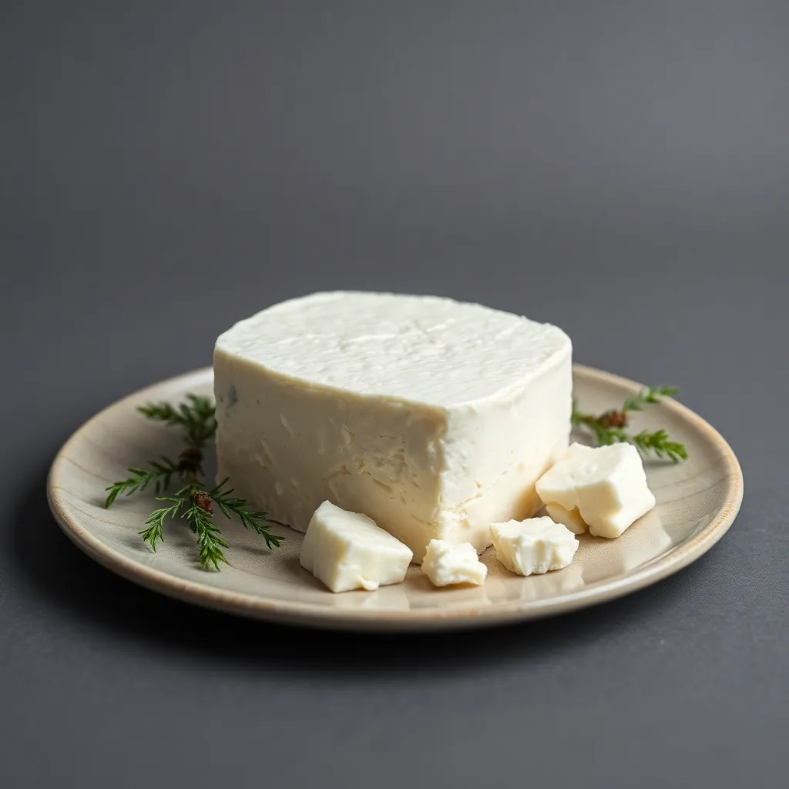
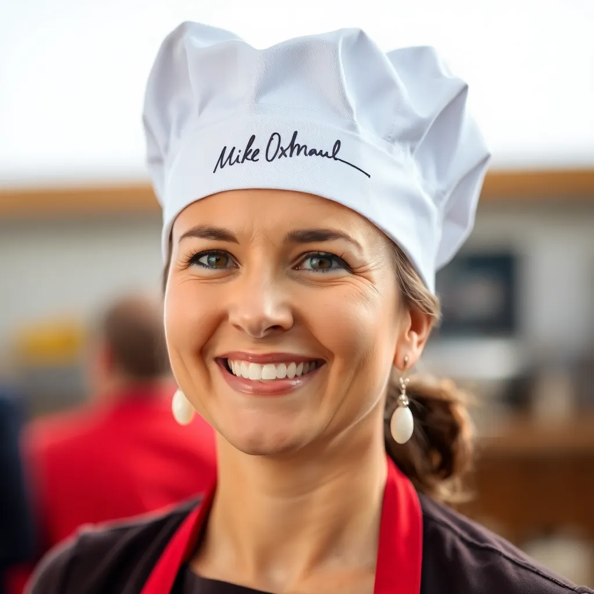
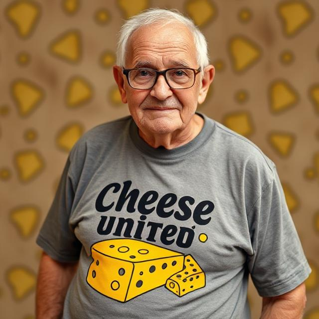

STORE
Buy our homemade product, DIY cheese making, and our special merch below (Accepting Overseas)
CHEESE UNITED MENU

Cottage Cheese
Cottage cheese is a fresh, soft cheese with a mild flavor and a creamy, lumpy texture, made by curdling and draining cow's milk.
$7
CHEESE UNITED MAKER

Cheese Making Kit
A kit with everything you need to easily make fresh cheese at home. "Turn milk into magic, make your own cheese at home!"
.$20
CHEESE UNITED MENU
Feta Cheese
Feta cheese is a brined, crumbly textured cheese with a tangy, salty flavor, traditionally made from sheep's or goat's milk.
$7
CHEESE UNITED MERCH
Chef Hat
A premium chef hat, signed by Mike Oxmaul, blending style and culinary mastery for a truly distinguished look in the kitchen.
$10
CHEESE UNITED MERCH
T-Shirt
Show off your love for cheese with the official CHEESE UNITED MAKER T-shirt. a stylish, comfortable way to represent the cheese-making community.
$20
CHEESE UNITED MERCH

Apron by MIKE
Crafted by Mike OxLong, this apron combines durability and style, offering both protection and comfort for chefs, bakers, and food enthusiasts alike.
$25